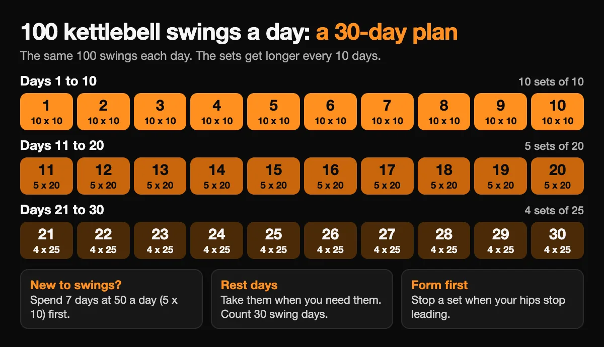
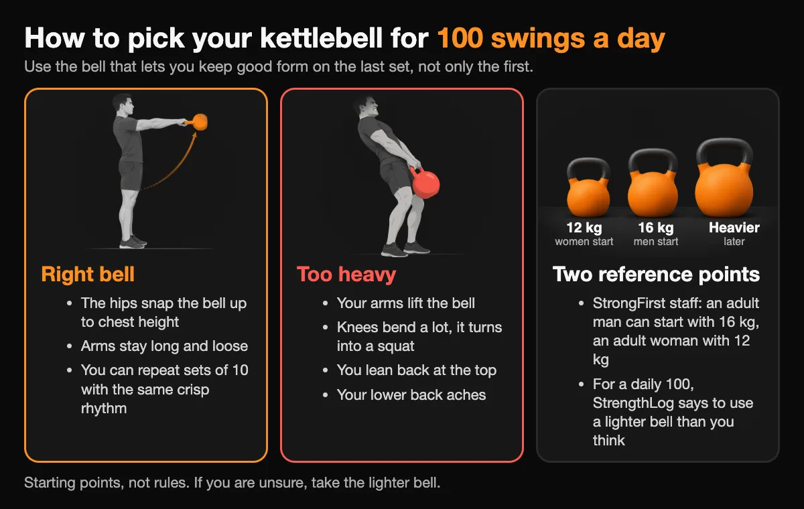
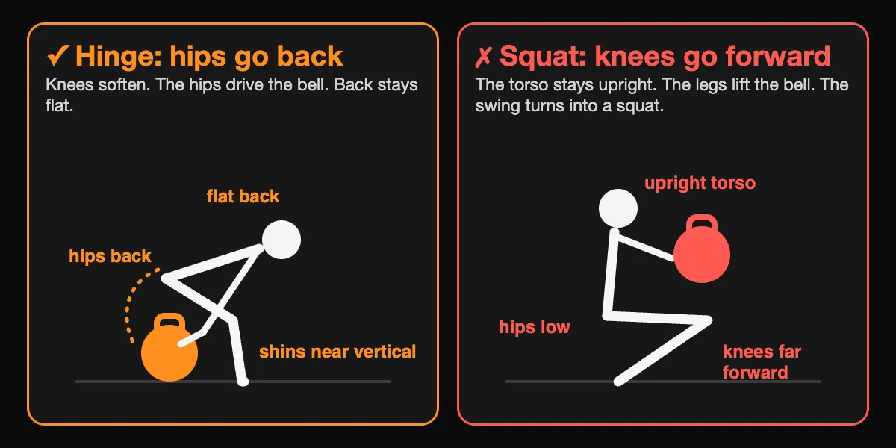
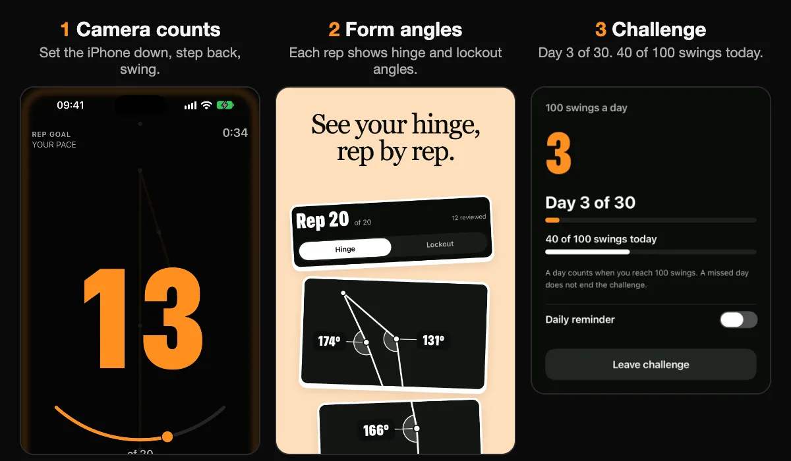

Guide · SwingCoach for iPhone
100 kettlebell swings a day: a 30-day plan, bell weight and form
Is 100 kettlebell swings a day enough? Here is a 30-day plan with set splits, a way to choose your bell weight, a form checklist, and what people report.

100 kettlebell swings a day is a good daily habit. It trains your hips, back and heart rate in a few minutes. It is not a full training program, and it can hurt your back if your form slips. Start with 50 a day if swings are new to you. Use a bell that lets you keep good form on the last set.
I build SwingCoach, a kettlebell app that counts swings with the iPhone camera. I am not a coach or a doctor. This guide uses my own plan, which is not from a study, and the reports of people who did the challenge. The links show each source.
In short
- The plan: 100 swings a day in sets, for 30 swing days. Rest days are your choice.
- The bell: pick the weight you can swing with a crisp hip snap, then go lighter for daily volume.
- The form: hinge, do not squat. Stop a set when your arms start to lift the bell.
- The count: SwingCoach counts the swings and tracks each day.
100 kettlebell swings a day for 30 days: a plan
Do 100 swings each day, in sets. Short sets keep your form clean. Here is the split I suggest:
- Days 1 to 10: 10 sets of 10.
- Days 11 to 20: 5 sets of 20.
- Days 21 to 30: 4 sets of 25.
Rest as long as you need between sets. You can also spread the sets over the day, as one tester did when she broke the challenge into four sets of 25. Another tester said that 100 swings took a good few minutes.
If swings are new to you, do not start at 100. The StrengthLog author, who swung daily for 107 days, says to ease in with light workouts a few times a week for several weeks. A simple ramp: do 7 days at 50 swings (5 sets of 10), then start the 100 plan.
Rest days: they are your choice. Tom's Guide says that hitting the same muscles every single day is not recommended. If your back or hands need a day off, take it. A rest day only makes the month longer. It does not end the challenge.
What weight for 100 kettlebell swings a day?

There is no one weight. Here are two reference points:
- A StrongFirst staff instructor says that an adult man can start with a 16 kg bell and an adult woman with a 12 kg bell. He points to the book Kettlebell Simple and Sinister. Another instructor asks: which bell can you swing with confidence for 10 reps every minute, for 10 minutes?
- For a daily 100, StrengthLog says to use a lighter bell than you think.
My rule: take the lighter bell. If your arms lift the bell, if you rush the reps, or if your lower back aches, the bell is too heavy for a daily 100. A daily practice based on StrongFirst principles uses the same stop signs: stop when your technique or power drops.
Form: hinge, do not squat

Tom's Guide says the swing comes from your legs and hips, not your arms, and that it is not a squat. Use this checklist:
- Push your hips back, and bend your knees only a little.
- Keep your arms long. The hips throw the bell.
- Snap your hips at the top. The bell reaches about chest height.
- Finish tall. Do not lean back, because it loads the lower back.
- Do not rush. Fast reps move the work to your upper body.
Is it safe for my back?
It can be, if your form is good. It can also hurt. The Tom's Guide tester felt the swings in her lower back after a couple of days, and her trainer friend said that going from no swings to 100 a day was probably a bit of a jump. The Fit&Well tester said that 100 reps need a lot of concentration, and that a lapse could end badly. If you have a back injury, ask a doctor or a trainer first. Stop if you feel sharp pain.
Your hands also need care. Both testers got calluses or blisters.
100 kettlebell swings a day: results and benefits
I do not promise results. Here is what the sources say:
- What it works. A trainer in the Fit&Well article says the swing works the glutes, hamstrings, core and upper back.
- What testers felt. Sore glutes, a higher heart rate, sore lower backs when form slipped, and boredom. One tester said that two weeks is not enough to see a change in the body.
- One long story. The StrengthLog author reports that daily swings helped the author's back after years of pain. That is one person's story, and it is not proof for you.
- Calories. I give no number. It depends on your weight, your bell and your pace. Numbers online vary a lot, so treat any number as an estimate.
Is 100 kettlebell swings a day enough? It is enough for a daily habit and some conditioning. For strength, pair it with other training. The Fit&Well trainer says that you can change the reps and the bell weight for different goals.
How SwingCoach helps with the 100-swing challenge
Counting to 100 while you watch your form is hard. This is why I added challenges to SwingCoach 1.2.1.

- A daily challenge. Choose 50 swings a day for 7 days, 100 a day for 30 days, or 200 a day for 30 days. You can swing in one workout or in many.
- The camera counts. Put the iPhone down at hip height, step back, and swing. You can fix the count with +1 or −1.
- Form cues you hear. When a fault repeats, a short cue speaks, such as "Hips back", "Arms long" or "Don't lean back".
- Day by day. The screen shows "Day 3 of 30" and "40 of 100 swings today". A day counts when you reach 100. A missed day does not end the challenge.
- A daily reminder. Turn it on and choose the time.
- Apple Watch. The optional Watch app shows your swings today and your day.
SwingCoach is made for the Russian swing, to chest height. It needs an iPhone with iOS 17 or later. It has no account and no ads. The camera gives movement estimates from a 2D side view, so it is a guide and not a coach in the room. Read how the hands-free workout works or compare SwingCoach vs pocket, Apple Watch & timer kettlebell apps.
Questions
What weight kettlebell for 100 swings a day? Use a bell that keeps your form clean on the last set. One StrongFirst instructor says an adult man can start with 16 kg and an adult woman with 12 kg. For a daily 100, go lighter if in doubt.
How long do 100 kettlebell swings take? A few minutes. One tester said it took a good few minutes.
Can I split 100 swings across the day? Yes. One tester did four sets of 25 at different times. In SwingCoach, the workouts of one day add up.
Should I swing every day or every other day? Both work. Tom's Guide says that the same muscles every day is not recommended. Take rest days when you need them.
Is it safe for my back? It can be with good form and a light bell. Ease in, do not rush, and stop if you feel pain.
How many kettlebell swings per day? There is no official number. 100 is a round number that testers chose. Start with 50 if you are new.